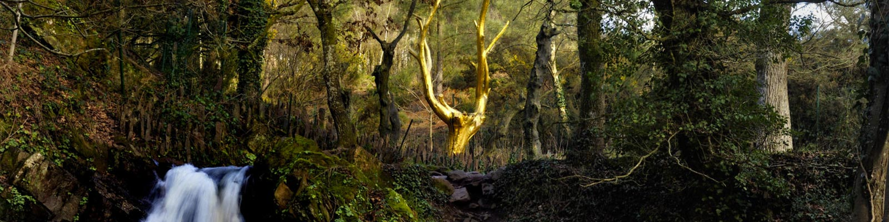

Qui n’a jamais entendu parler de la légende du roi Arthur ? C’est dans la magnifique forêt de Brocéliande, entre landes et étangs, qu’elle prend sa source. La seule évocation de ce lieu réveille un monde merveilleux peuplé de la fée Viviane, Merlin l’enchanteur ou du chevalier Lancelot. Un site magique à découvrir lors de belles randonnées.

LA FORET DE BROCELIANDE
Lieu mystérieux, berceau de légendes
Habité au 9e siècle par le roi Salomon, le château de Comper est indissociable d’une balade en forêt de Brocéliande. Si la légende raconte qu’il fut la résidence de la fée Viviane, il abrite aujourd’hui le Centre de l’imaginaire arthurien, qui organise expositions, spectacles et randonnées. Pour vous rafraîchir la mémoire ou en apprendre davantage sur la forêt et ces récits merveilleux, rendez-vous à La Porte des secrets. Un passage obligé que petits et grands vont adorer.
Amants infidèles, s'abstenir
Cap sur le Val-sans-retour ! Un étroit vallon, lieu de légende, où Viviane retenait prisonniers les maris infidèles qui s’étaient aventurés en ce lieu. Valeureux chevalier élevé par la fée, Lancelot déjoua le sortilège en affrontant les dragons et libéra les prisonniers. Aujourd’hui, le circuit de randonnée des Landes de Gurwant de 11 kilomètres vous mènera à plusieurs sites légendaires incontournables : le château de Trécesson, l’hôtié de Viviane ou le tombeau des géants.
Une fontaine aux bulles magiques
La fontaine de Barenton est l’un des sites de la forêt les plus chargé de légendes. Perdu au fond des bois, c’est ici que Merlin l’enchanteur aurait rencontré Viviane. L’eau de cette fontaine pétille de bulles dites magiques. Elle guérirait de la teigne, apaiserait les fous et aiderait les jeunes femmes à trouver un mari. Si vous rêvez de jeunesse, la fontaine de Jouvence est à deux pas…

Les astuces de Bigoudène !
Pour cette activité, nous vous conseillons d'emmener..
- Une gourde
- Un pic-nique
- Une tenue adaptée à la météo
- Des chaussures de marches
Venez faire le plein d'aventure en visitant cette forêt de tous les comptes !
Vous trépidez d’impatience de découvrir les lieux emblématiques de la mythique forêt des légendes arthurienne ? Bigoudène & Fun vous a concocté un programme juste pour vous afin de d’explorer les moindres recoins de cette mystérieuse futaie et de vous imaginer à la place des plus valeureux chevalier de l’ancien temps.
Afin de pouvoir profiter de votre incroyable visite, nous vous indiquons ci-contre la grille tarifaire, adapté à votre situation. Si vous désirez réserver ou avoir plus amples informations sur cette activité, nous vous prions de vous rendre sur l’onglet « Nous contacter » en bas de page.
TARIFS
| Formule | Saison | |||
|---|---|---|---|---|
| Printemps | Été | Automne | Hiver | |
| Tarif plein (adulte) | 17€ | 20€ | 15€ | 12€ |
| Tarif Réduit (+12 ans, étudiant, demandeur d'emploi) | 10€ | 11€ | 8€ | 6€ |
| Moins de 12 ans | 5,70€ | 8€ | 5€ | 3€ |
| Tarif famille (2 adultes et enfants à charge) | 40,80€ | 45.80€ | 38€ | 30€ |
Le proverbe de Bigoud.
"Il était une fois une forêt enchantée, où vivaient tout les personnages de contes. Nous les connaissons bien... Ou du moins nous le croyons.
Un jour ils se retrouvèrent piégés dans un monde où les fins heureuses n'existaient plus. Notre monde.”